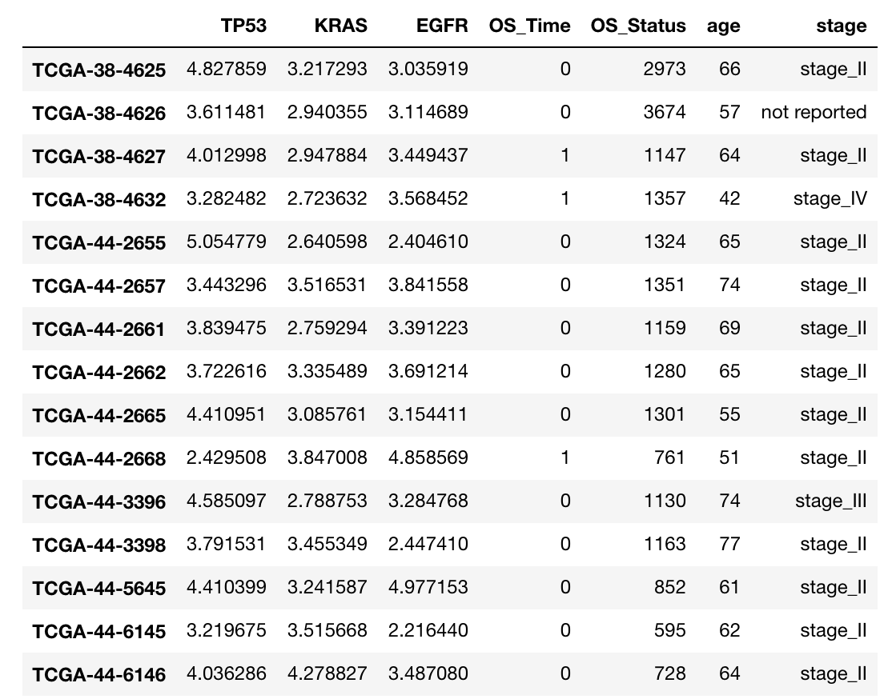
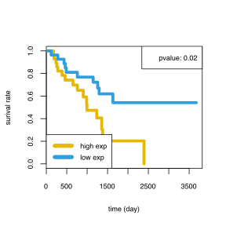
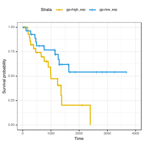
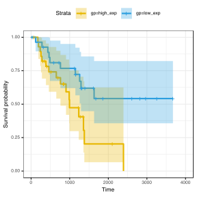
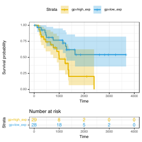

生存分析
应用场景
通常运用于比较不同组别之间生存预后的差异
所用数据为TCGA肺腺癌数据，数据结构如下

#读取数据，构建生存分析所需数据结构
load('./cli_test.Rdata')#rt_cli
#按照基因的表达值中位数分成高低表达组
rt_cli$gp[rt_cli[, 'EGFR'] < median(rt_cli[, 'EGFR'])] <- 'low_exp'
rt_cli$gp[rt_cli$gp != 'low_exp'] <- 'high_exp'
#计算生存的pvalue
library(survival)
diff <- survdiff(Surv(OS_Time, OS_Status) ~ rt_cli$gp, data = rt_cli)
p_value <- 1-pchisq(diff$chisq, df=1)
fit <- survfit(Surv(OS_Time, OS_Status) ~ rt_cli$gp,, data = rt_cli)
作图
par(mar = c(5, 5, 5, 3))
plot(fit, lty = 1:1, lwd = 5, cex.main = 2.5, cex.lab = 2.5, col=c("#E7B800", "#2E9FDF"), xlab= ("time (day)"),
ylab="surival rate")
legend('bottomleft', c('high exp', 'low exp'), cex = 1.5, lty = 1, lwd = 7, col=c("#E7B800", "#2E9FDF"))
legend('topright', paste('pvalue:', round(p_value, digits = 2), sep = " "), cex = 1.5)
###也可以利用survminer这个R包
library(survminer)
ggsurvplot(fit,
conf.int = FALSE,
risk.table.col = "strata", # Change risk table color by groups
ggtheme = theme_bw(), # Change ggplot2 theme
palette = c("#E7B800", "#2E9FDF"))
#也可以加上95%CI
#conf.int = TRUE
ggsurvplot(fit,
conf.int = TRUE,
risk.table.col = "strata", # Change risk table color by groups
ggtheme = theme_bw(), # Change ggplot2 theme
palette = c("#E7B800", "#2E9FDF"))
#也可以加上num
ggsurvplot(fit,
conf.int = TRUE,
risk.table.col = "strata", # Change risk table color by groups
ggtheme = theme_bw(), # Change ggplot2 theme
palette = c("#E7B800", "#2E9FDF"),
risk.table = TRUE)
 